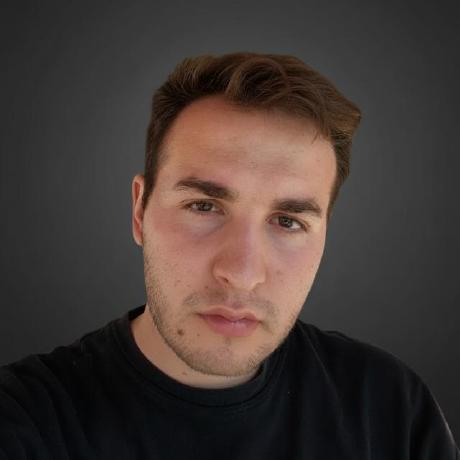

Y.E. YILMAZEEE
SCROLL
- ·
DETAYLARI İNCELE ↗
DETAYLARI İNCELE ↗
OmenSpace
DETAYLARI İNCELE ↗
AlwaysOn
DETAYLARI İNCELE ↗
03 —
- Electronics design
- Embedded systems / ESP32
- Sensors & actuators
- Autonomous robotics
- UAV / micro-drones
- Precision agriculture
- AI-assisted development
- System software
- Testing & validation